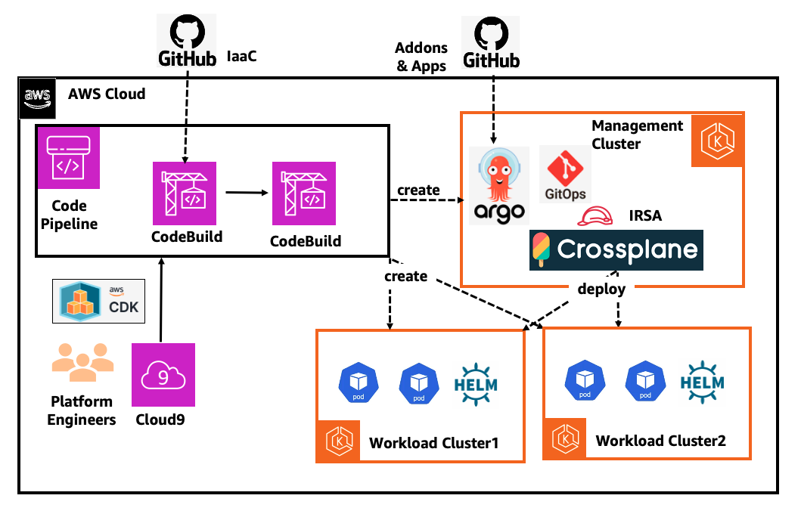
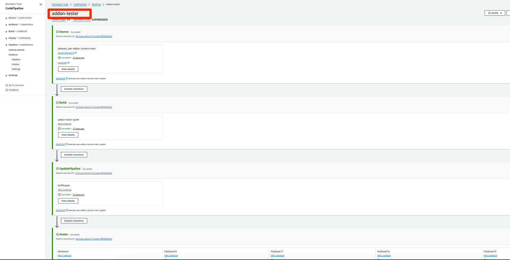
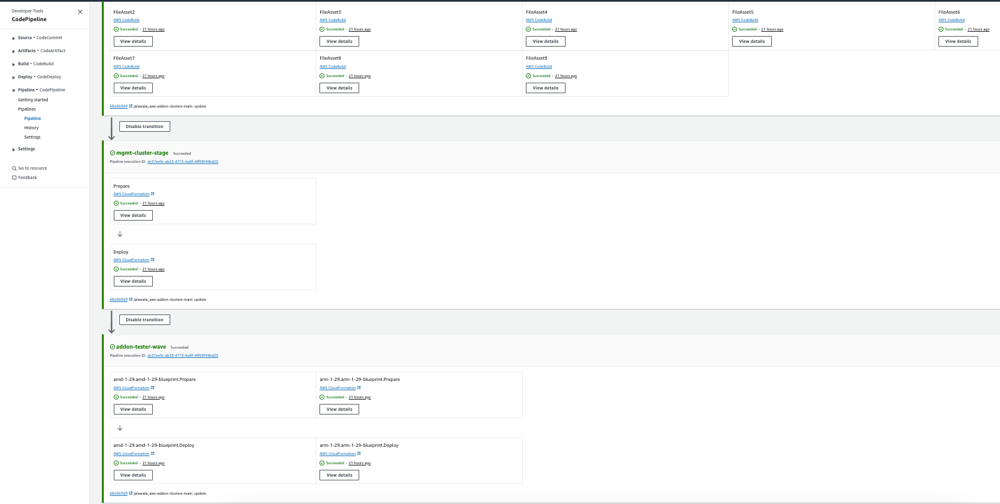
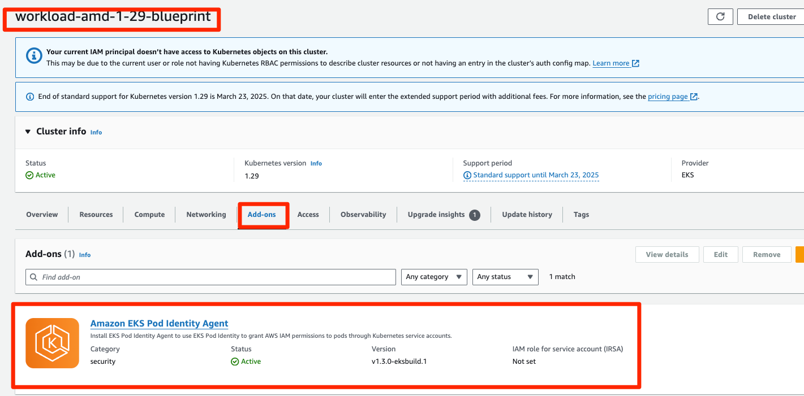
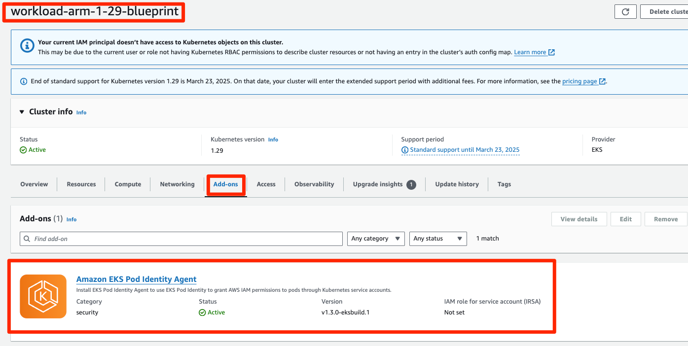

GitOps based Multi-cluster add-on and Apps Management using Crossplane and ArgoCD¤
Objective¤
The objective of this pattern is to provide centralized management of Amazon EKS add-ons, Kubernetes Applications and Helm charts in workload clusters. This approach consists of a Management Cluster and multiple workload clusters. The Management Cluster is created with ArgoCD and Crossplane add-ons. The platform team creates Crossplane Manifest files for Amazon EKS add-ons/Kubernetes Applications/Helm charts and pushes them to the GitOps Repo. The ArgoCD Application Controller in the Management Cluster reconciles these Crossplane Manifests and deploy them into Management Cluster. The Crossplane Controller in the Management Cluster deploys the Amazon EKS add-ons/Kubernetes Applications/Helm charts into the Workload Clusters.
This helps platform teams to simplify the process of deploying add-ons and Apps from a central Management Cluster. In this Solution, we use CDK to deploy AWS CodePipeline which monitors this platform repo and deploy the Management and Workload Clusters using CDK EKS Blueprints.
Architecture¤

Approach¤
This blueprint will include the following:
- AWS CodePipeline which deploys the Management and Workload Clusters
- A new Well-Architected EKS cluster
eks-mgmt-clusterand two workload EKS Clustersworkload-amd-1-29-blueprintandworkload-arm-1-29-blueprintin the region and account you specify. - Amazon VPC CNI add-on (VpcCni) into your cluster to support native VPC networking for Amazon EKS.
- The Management Cluster is deployed with the following add-ons.
- Upbound Universal Crossplane Provider
- Upbound AWS Family Crossplane Provider
- Upbound AWS EKS Crossplane Provider
- Kubernetes Crossplane Provider
- Helm Crossplane Provider
- Secrets Store AddOn
- ArgoCD add-on
- The ArgoCD add-on is bootstrapped with GitOps which contains Crossplane Manifest files to deploy EKS add-ons, Kubernetes Manifests and also Helm Charts.
GitOps Configuration¤
For GitOps, the blueprint bootstrap the ArgoCD add-on and points to the EKS Blueprints Workload sample repository.
Prerequisites¤
Ensure that you have installed the following tools on your machine.
Create AWS Secret Manager Secret¤
Create a plain-text Amazon secret to hold a fine-grained GitHub access token for this repo in the desired region, and
set its name as a value to the GITHUB_SECRET environment variable. Default value is cdk_blueprints_github_secret.
WARNING: When switching the CDK between region, remember to replicate this secret!!!!
export ACCOUNT_ID=$(aws sts get-caller-identity --output text --query Account)
export AWS_REGION="us-west-2"
export CDK_REPO_GITHUB_PAT_TOKEN=<set_token_here>
export CDK_REPO_AWS_SECRET_NAME="cdk_blueprints_github_secret"
aws secretsmanager create-secret --region $AWS_REGION \
--name $CDK_REPO_AWS_SECRET_NAME \
--description "GitHub Personal Access Token for CodePipeline to access GitHub account" \
--secret-string $CDK_REPO_GITHUB_PAT_TOKEN
Deploy¤
- Clone the repository and install dependency packages. This repository contains CDK v2 code written in TypeScript.
git clone https://github.com/aws-samples/cdk-eks-blueprints-patterns.git
cd cdk-eks-blueprints-patterns
npm i
- Execute the commands below to bootstrap the AWS environment
cdk bootstrap aws://$ACCOUNT_ID/$AWS_REGION
- Run the following command from the root of this repository to deploy the pipeline stack:
make clean
make build
make list
make pattern crossplane-argocd-gitops deploy
Cluster Access¤
View the CodePipeline¤


Access the Management EKS cluster¤
In this section, let us create a kube-context for the Management cluster and ensure that the ArgoCD and Crossplane add-ons are deployed successfully.
- Run the below command to get the AWS command from CloudFormation Stack
eks-mgmt-cluster-stage-eks-mgmt-cluster-stage-blueprintoutputs
The example command looks like below.
export CFNOutputKey=$(aws cloudformation describe-stacks \
--stack-name eks-mgmt-cluster-stage-eks-mgmt-cluster-stage-blueprint \
--query 'Stacks[].Outputs[].OutputKey' | jq -r '.[]|select(. | startswith("mgmtclusterstageblueprintConfigCommand"))')
echo $CFNOutputKey
export mgmtclusterstageblueprintConfigCommand=$(aws cloudformation describe-stacks \
--stack-name eks-mgmt-cluster-stage-eks-mgmt-cluster-stage-blueprint \
--query 'Stacks[].Outputs[?OutputKey==`'$CFNOutputKey'`].OutputValue' \
--output text)
echo $mgmtclusterstageblueprintConfigCommand
- Run below command to create the kube-context for the Management cluster.
$mgmtclusterstageblueprintConfigCommand
The output will look like below.
Updated context arn:aws:eks:us-west-2:ACCOUNT_ID:cluster/eks-eks-mgmt-cluster in /Users/<user_name>/.kube/config
- Copy the context in the output above and set an environment variable
export MANAGEMENT_CLUSTER_CONTEXT="arn:aws:eks:${AWS_REGION}:${ACCOUNT_ID}:cluster/eks-eks-mgmt-cluster"
echo "export MANAGEMENT_CLUSTER_CONTEXT=${MANAGEMENT_CLUSTER_CONTEXT}" >> ~/.bash_profile
- Run below command to validate the access to the cluster
kubectl --context $MANAGEMENT_CLUSTER_CONTEXT get node
The output will like below.
NAME STATUS ROLES AGE VERSION
ip-10-0-137-3.ec2.internal Ready <none> 18h v1.29.6-eks-1552ad0
ip-10-0-169-194.ec2.internal Ready <none> 18h v1.29.6-eks-1552ad0
- Run below command to get the list of Crossplane Providers deployed in the cluster
kubectl --context $MANAGEMENT_CLUSTER_CONTEXT get providers.pkg.crossplane.io
The output will like below.
NAME INSTALLED HEALTHY PACKAGE AGE
helm-provider True True xpkg.upbound.io/crossplane-contrib/provider-helm:v0.19.0 18h
kubernetes-provider True True xpkg.upbound.io/crossplane-contrib/provider-kubernetes:v0.13.0 18h
provider-aws-eks True True xpkg.upbound.io/upbound/provider-aws-eks:v1.1.0 18h
upbound-provider-family-aws True True xpkg.upbound.io/upbound/provider-family-aws:v1.13.0
upbound-system Namespace.
kubectl --context $MANAGEMENT_CLUSTER_CONTEXT get pod -n upbound-system
The output will like below.
NAME READY STATUS RESTARTS AGE
crossplane-594b65bfdb-pgkxf 1/1 Running 0 6d8h
crossplane-rbac-manager-86c74cf5d-tjcw8 1/1 Running 0 6d8h
helm-provider-4d90a08b9ede-7c874b858b-pp26d 1/1 Running 0 47h
kubernetes-provider-a3cbbe355fa7-55846cfbfb-6tpcl 1/1 Running 0 25h
provider-aws-eks-23042d28ed58-66d9db8476-jr6mb 1/1 Running 0 6d8h
upbound-provider-family-aws-bac5d48bd353-64845bdcbc-4vpn6 1/1 Running 0 6d8h 8d
argocd Namespace.
kubectl --context $MANAGEMENT_CLUSTER_CONTEXT get pod -n argocd
The output will like below.
NAME READY STATUS RESTARTS AGE
blueprints-addon-argocd-application-controller-0 1/1 Running 0 24h
blueprints-addon-argocd-applicationset-controller-7b78c7fc94ls9 1/1 Running 0 24h
blueprints-addon-argocd-dex-server-6cf94ddc54-dfhv7 1/1 Running 0 24h
blueprints-addon-argocd-notifications-controller-6f6b7d95cdd2tl 1/1 Running 0 24h
blueprints-addon-argocd-redis-b8dbc7dc6-h4bs8 1/1 Running 0 24h
blueprints-addon-argocd-repo-server-fd57dc686-zkbsm 1/1 Running 0 4h15m
blueprints-addon-argocd-server-84c8b597c9-98c95 1/1 Running 0 24h
Access to the Workload clusters using IAM role eks-workload-connector-role¤
Note that we create and add an IAM role eks-workload-connector-role with system:masters RBAC access to both of the workload clusters i.e. workload-amd-1-29-blueprint and workload-arm-1-29-blueprint as part of the Stack creation.
The Upbound AWS EKS Provider Pod will use its IRSA role to assume the eks-workload-connector-role to gain access to the workload clusters. The sts:AssumeRole IAM permission is already added to the IRSA role during the Management cluster creation.
We will create two Crossplane objects of type ClusterAuth to create kube-context to access the Workload clusters using the IAM role eks-workload-connector-role
We will also create two Crossplane objects of type Addon to deploy Amazon EKS add-ons into the Workload clusters. To deploy add-ons, the AWS EKS Provider Pod needs eks:* IAM permissions, which are already added to eks-workload-connector-role during cluster creation.
Note this IAM permissions can be made very granular to provide least privileged access to workload clusters.
Access the Workload EKS cluster workload-amd-1-29-blueprint¤
In this section, let us create a kube-context and verify access to the Workload cluster workload-amd-1-29-blueprint
Note that we have added an IAM role eks-workload-connector-role with system:masters RBAC access to both of the workload clusters i.e. workload-amd-1-29-blueprint and workload-arm-1-29-blueprint.
- Run the command to create the kube-context for the cluster.
aws eks update-kubeconfig --name workload-amd-1-29-blueprint --region ${AWS_REGION} --role-arn "arn:aws:iam::${ACCOUNT_ID}:role/eks-workload-connector-role"
- Copy the context in the output above and set an environment variable.
export WORKLOAD_CLUSTER1_CONTEXT="arn:aws:eks:${AWS_REGION}:${ACCOUNT_ID}:cluster/workload-amd-1-29-blueprint"
echo "export WORKLOAD_CLUSTER1_CONTEXT=${WORKLOAD_CLUSTER1_CONTEXT}" >> ~/.bash_profile
kubectl --context $WORKLOAD_CLUSTER1_CONTEXT get node
Access the Workload EKS cluster workload-arm-1-29-blueprint¤
In this section, let us create a kube-context and verify access to the Workload cluster workload-arm-1-29-blueprint
Note that we have added an IAM role eks-workload-connector-role with system:masters RBAC access to both of the workload clusters i.e. workload-amd-1-29-blueprint and workload-arm-1-29-blueprint.
- Run the command to create the kube-context for the cluster.
aws eks update-kubeconfig --name workload-arm-1-29-blueprint --region ${AWS_REGION} --role-arn "arn:aws:iam::${ACCOUNT_ID}:role/eks-workload-connector-role"
export WORKLOAD_CLUSTER2_CONTEXT="arn:aws:eks:${AWS_REGION}:${ACCOUNT_ID}:cluster/workload-arm-1-29-blueprint"
echo "export WORKLOAD_CLUSTER2_CONTEXT=${WORKLOAD_CLUSTER1_CONTEXT}" >> ~/.bash_profile
kubectl --context $WORKLOAD_CLUSTER1_CONTEXT get node
Test¤
Install the ArgoCD CLI¤
-
Install the ArgoCD CLI as per the docs
-
Get the ArgoCD Admin password using below command.
kubectl --context $MANAGEMENT_CLUSTER_CONTEXT -n argocd get secret argocd-initial-admin-secret -o jsonpath="{.data.password}" | base64 -d; echo
- Open a New Terminal and Run a local proxy server for the ArgoCD Server.
kubectl --context $MANAGEMENT_CLUSTER_CONTEXT port-forward svc/blueprints-addon-argocd-server -n argocd 8080:443
argocd login localhost:8080 --username admin --password <admin_password>
- Add Management EKS cluster to ArgoCD.
argocd cluster add $MANAGEMENT_CLUSTER_CONTEXT
WARNING: This will create a service account `argocd-manager` on the cluster referenced by context `arn:aws:eks:us-west-2:ACCOUNT_ID:cluster/eks-mgmt-cluster` with full cluster level privileges. Do you want to continue [y/N]? y
INFO[0004] ServiceAccount "argocd-manager" already exists in namespace "kube-system"
INFO[0004] ClusterRole "argocd-manager-role" updated
INFO[0005] ClusterRoleBinding "argocd-manager-role-binding" updated
Cluster 'https://0F745A41ECA76297CBF070C032932033.sk1.us-west-2.eks.amazonaws.com' added
- Run the below command to get the list of ArgoCD Applications.
argocd app list
The output will look like below.
NAME CLUSTER NAMESPACE PROJECT STATUS HEALTH SYNCPOLICY CONDITIONS REPO PATH TARGET
argocd/bootstrap-apps https://kubernetes.default.svc argocd default Synced Healthy Auto-Prune <none> https://github.com/aws-samples/eks-blueprints-workloads ./crossplane-argocd-gitops/envs/dev main
argocd/team-spock https://kubernetes.default.svc argocd default Synced Healthy Auto-Prune <none> https://github.com/aws-samples/eks-blueprints-workloads ./teams/team-spock/dev main
Validate EKS add-ons deployment in Workload Clusters¤
- Run the below command to get the list of
ProviderConfigCrossplane CRD objects deployed in the Management cluster
kubectl --context $MANAGEMENT_CLUSTER_CONTEXT get providerconfigs.aws.upbound.io
The output will look like below.
NAME AGE
common-provider-config-aws 23h
- Run the below command to get the list of
AddonObjects deployed in the Management cluster.
kubectl --context $MANAGEMENT_CLUSTER_CONTEXT get addons.eks.aws.upbound.io
The output will look like below.
NAME READY SYNCED EXTERNAL-NAME AGE
addon-eks-pod-identity-agent-amd-1-29 True True workload-amd-1-29-blueprint:eks-pod-identity-agent 4h15m
addon-eks-pod-identity-agent-arm-1-29 True True workload-arm-1-29-blueprint:eks-pod-identity-agent 4h15m
- Go to the Workload EKS Clusters and Ensure that EKS add-on is deployed successfully.


Validate Kubernetes Manifests deployment in Workload clusters¤
- Run the below command to get the list of Crossplane Kubernetes
ProviderConfigobjects deployed in the Management cluster.
kubectl --context $MANAGEMENT_CLUSTER_CONTEXT get providerconfigs.kubernetes.crossplane.io
The output will look like below.
NAME AGE
provider-config-k8s-workload-amd-1-29-blueprint 4h31m
provider-config-k8s-workload-arm-1-29-blueprint 4h40m
- Run the below command to get the list of Namespaces in the Workload cluster
workload-amd-1-29-blueprint
kubectl --context $WORKLOAD_CLUSTER1_CONTEXT get ns
The output will look like below.
NAME STATUS AGE
default Active 8d
external-secrets Active 8d
kube-node-lease Active 8d
kube-public Active 8d
kube-system Active 8d
test-namespace-workload-amd-1-29-blueprint Active 4h9m
- Run the below command to get the list of Namespaces in the Workload cluster
workload-arm-1-29-blueprint
kubectl --context $WORKLOAD_CLUSTER2_CONTEXT get ns
The output will look like below.
NAME STATUS AGE
default Active 8d
external-secrets Active 8d
kube-node-lease Active 8d
kube-public Active 8d
kube-system Active 8d
test-namespace-workload-arm-1-29-blueprint Active 4h9m
Validate Helm Chart deployment in Workload clusters¤
- Run the below command to get the list of Crossplane Helm Provider Objects deployed in the Management Cluster.
kubectl --context $MANAGEMENT_CLUSTER_CONTEXT get providerconfigs.helm.crossplane.io
The output will look like below.
NAME AGE
provider-config-helm-workload-amd-1-29-blueprint 4h37m
provider-config-helm-workload-arm-1-29-blueprint 4h46m
- Run the below command to get the list of helm charts in the Workload Cluster
workload-amd-1-29-blueprint
helm --kube-context $WORKLOAD_CLUSTER1_CONTEXT list -A
The output will look like below.
NAME NAMESPACE REVISION UPDATED STATUS CHART APP VERSION
blueprints-addon-external-secrets external-secrets 1 2024-05-07 05:25:31.465715836 +0000 UTC deployed external-secrets-0.9.9 v0.9.9
test-helm-workload-amd-1-29-blueprint default 1 2024-05-15 06:39:17.325950143 +0000 UTC deployed nginx-17.0.1 1.26.0
- Run the below command to get the list of Helm Charts in the Workload cluster
workload-arm-1-29-blueprint
helm --kube-context $WORKLOAD_CLUSTER2_CONTEXT list -A
The output will look like below.
NAME NAMESPACE REVISION UPDATED STATUS CHART APP VERSION
blueprints-addon-external-secrets external-secrets 1 2024-05-07 05:26:52.028907405 +0000 UTC deployed external-secrets-0.9.9 v0.9.9
test-helm-workload-arm-1-29-blueprint default 1 2024-05-15 06:39:17.222351682 +0000 UTC deployed nginx-17.0.1 1.26.0
Cleanup¤
To clean up your EKS Blueprints, run the following commands:
make pattern crossplane-argocd-gitops destroy
crossplane-argocd-gitops. However to complete the Cleanup, delete the following CloudFormation Stacks manually using AWS Console or AWS CLI using below commands.
aws cloudformation delete-stack --stack-name workload-amd-1-29-workload-amd-1-29-blueprint
aws cloudformation delete-stack --stack-name workload-arm-1-29-workload-arm-1-29-blueprint
aws cloudformation delete-stack --stack-name mgmt-cluster-stage-mgmt-cluster-stage-blueprint